Luni–vineri 9:00–21:00 · sâmbătă 9:00–18:00
Tunsoare impecabilă în Drumul Taberei.
Barber shop doar pentru bărbați, în Sector 6. Tuns de la 70 de lei, cu programare online.
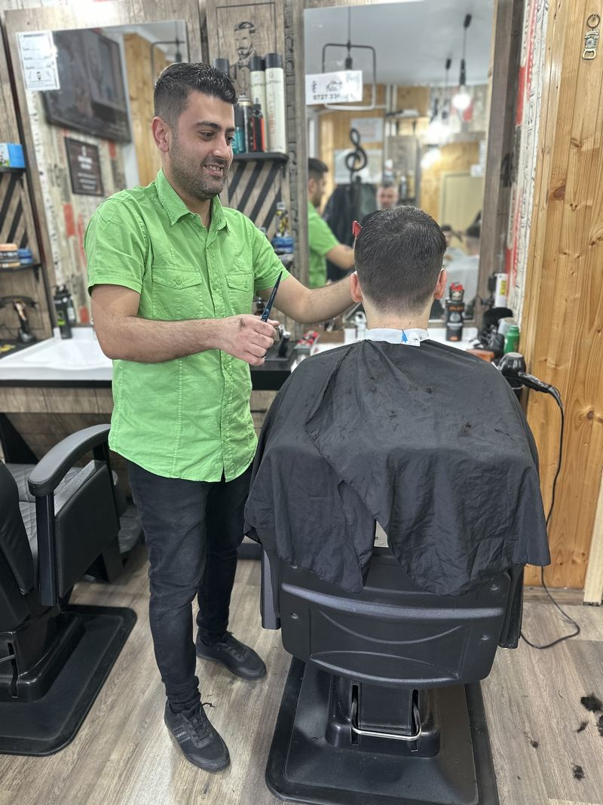
Urban Blade Barber Shop/Drumul Taberei 134/0767 418 067/Programări pe MERO
Alege-ți frizerul
Patru oameni, fiecare cu clienții lui. Recenziile și scorurile sunt cele de pe MERO, citite la 03.11.2026.
Tunsul costă la fel la toți patru: 70 de lei.
Prețuri
Prețuri și durate din MERO, citite la 03.11.2026. Lângă fiecare serviciu scrie cine îl face.
Programează-te pe MERO- Tuns70 lei30 min · toți patru
- Tuns + barbă90 lei30 min · toți patru
- Tuns + spălat90 lei30 min · toți patru
- Tuns + barbă + spălat110 lei45 min · Iulian
- Tuns + barbă + spălat + masaj110 lei45 min · Andrei
- Barbă20 lei15 min · Mircea, Dragoș, Andrei
- Barbă, la Iulian30 lei30 min · Iulian
- Contur cu briciul10 lei15 min · Iulian
- Spălat20 lei15 min · toți patru
Lucrări
Fade-uri, texturi și desene rase în păr, din galeria lor de pe MERO.
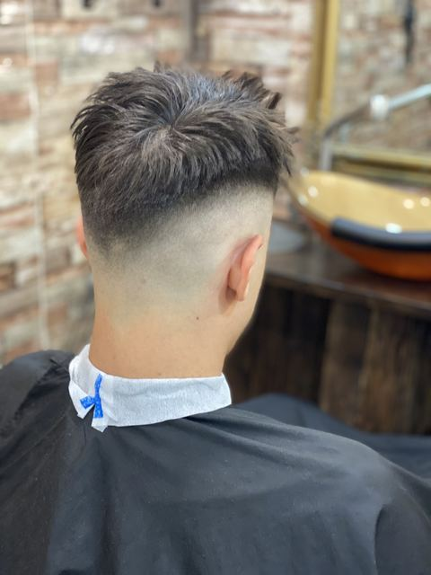
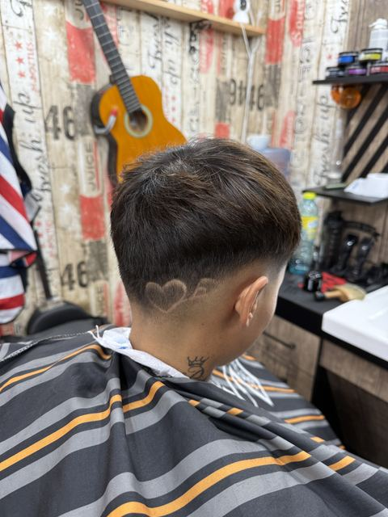
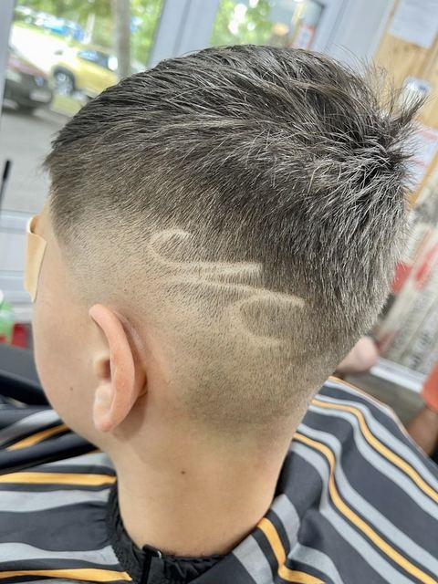
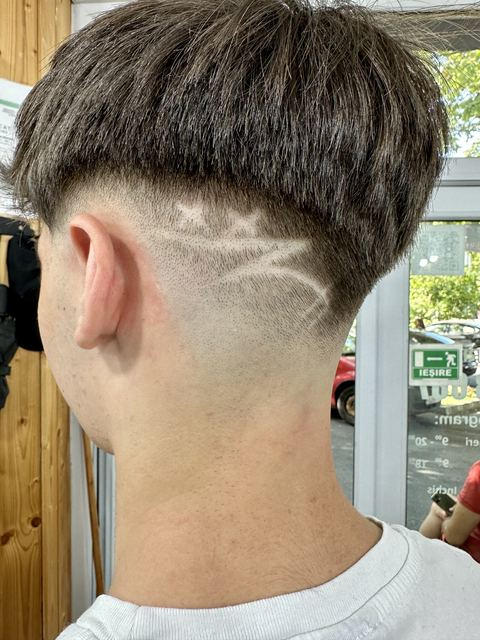
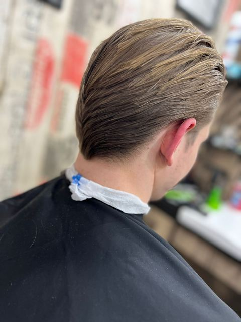
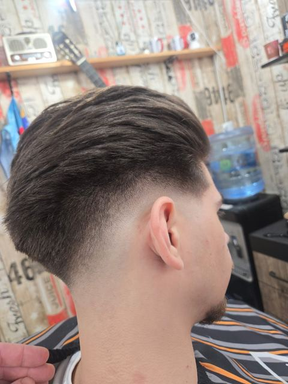
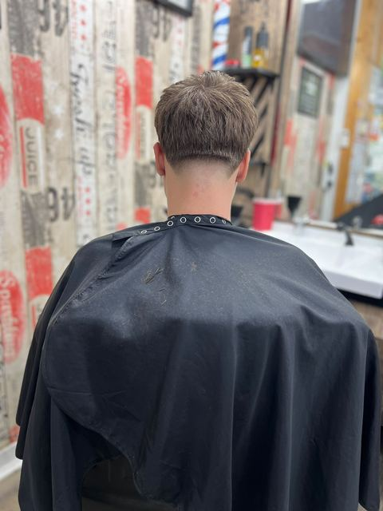
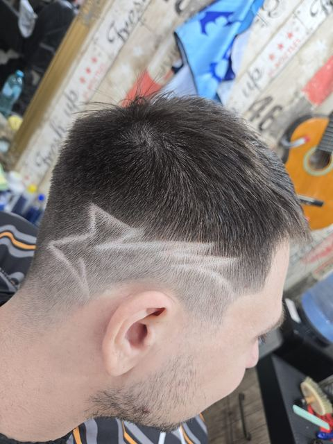
Camera
Piatră placată, lambriu de pin, un tapet cu litere vechi și o chitară pe perete.
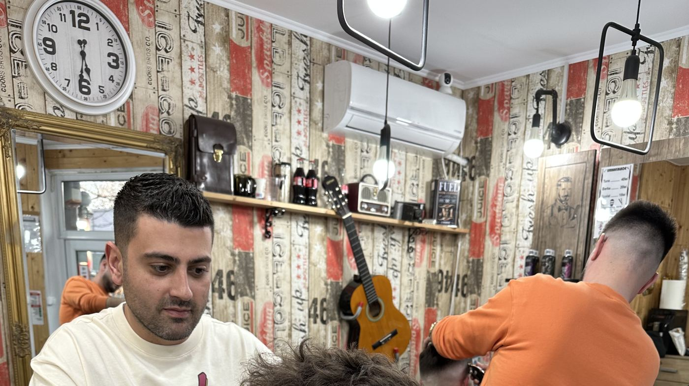
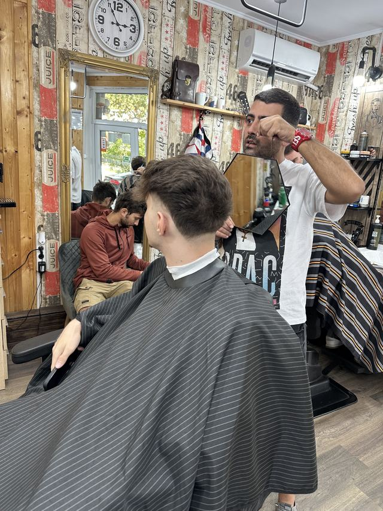
„Nu vii doar pentru un tuns, ci și pentru poveste și pentru oameni – te simți ca între prieteni.”
Alin Marian O., MERO
Ca de obicei.
Așa scriu clienții care revin. Fragmente exacte din recenziile de pe MERO.
Excelent, ca de obicei
Radu I.Talent, ca de fiecare data!
Stefan P.Profesionist, ca întotdeauna!
Ioan D.De 5 stele, ca de obicei!
Graur R.Ca de obicei, ireproșabil și agreabil.
Bogdan S.Genial ca de fiecare data!
Rares F.Bine ca de obicei. Mersi Dragos!
George O.ca de obicei, este perfect
Alexander F.Top ca de fiecare dată!
Flavian-Valerian S.Dragoș a tuns foarte bine ca de obicei.
Robin N.Ca de obicei, excelent.
Raluca B.
30 dintre cele mai recente 400 de recenzii cu text de pe MERO (citite la 03.11.2026) spun „ca de obicei”, „ca de fiecare dată” sau „ca întotdeauna”.
„Sunt client fidel de câțiva ani și pot spune că acest Barber Shop oferă de fiecare dată o experiență de nota 10!”
Ivan A., MERO„Cted ca Andrei ma tunde de 10 ani,dinainte sa fie aici. Eu locuiesc in Voluntari si vin sa ma tund in Drumul Taberei. Asta spune tot!”
Andrei A., MERO„Foarte prompt, deși nu aveam programare și-a făcut timp și pentru mine ... tunsoarea a iesit mai bine decât mă așteptam !”
Valentin D., MERO„Cel mai bun frizer din Bucuresti, mereu plec încântat și binedispus de la el, pe lângă faptul ca tunde extraordinar, e și un băiat de nota 1000, care știe să facă omul sa se simtă foarte bine.”
Tony S., MERO„Sunt client de când s a deschis unitatea dumneavoastră!”
Daniel P., MERO
Program și adresă
- Luni9:00–21:00
- Marți9:00–21:00
- Miercuri9:00–21:00
- Joi9:00–21:00
- Vineri9:00–21:00
- Sâmbătă9:00–18:00
- DuminicăÎnchis
Program conform MERO, 03.11.2026.
Drumul Taberei 134 Sector 6, București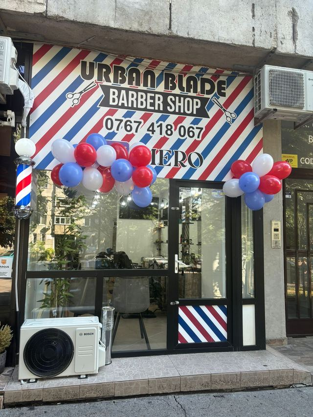
Harta se încarcă de la Google Maps abia după click.